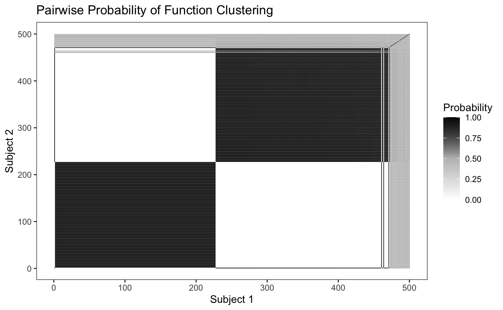

Introduction
Introduction.Rmdlibrary(rstapDP)
#> Loading required package: Rcpp
library(tidyverse)
#> ── Attaching packages ─────────────────────────────────────────────────────────── tidyverse 1.2.1 ──
#> ✓ ggplot2 3.3.0 ✓ purrr 0.3.4
#> ✓ tibble 3.0.1 ✓ dplyr 0.8.5
#> ✓ tidyr 1.0.2 ✓ stringr 1.4.0
#> ✓ readr 1.3.1 ✓ forcats 0.4.0
#> Warning: package 'purrr' was built under R version 3.6.2
#> ── Conflicts ────────────────────────────────────────────────────────────── tidyverse_conflicts() ──
#> x dplyr::filter() masks stats::filter()
#> x dplyr::lag() masks stats::lag()
library(rbenvo)
#>
#> Attaching package: 'rbenvo'
#> The following object is masked from 'package:rstapDP':
#>
#> FFR_subjects
theme_set(theme_bw())STAP
fit <- fdp_staplm(BMI ~ sex + sap(FFR),
benvo = FFR_benvo,
K = 5,
iter_max = 5000,
burn_in = 3000,
thin = 1,
seed = 43431)
#> [Chain 1] Beginning of iteration: 1 / 5000 (0%) [Warmup]
#> [Chain 1] Beginning of iteration: 500 / 5000 (10%) [Warmup]
#> [Chain 1] Beginning of iteration: 1000 / 5000 (20%) [Warmup]
#> [Chain 1] Beginning of iteration: 1500 / 5000 (30%) [Warmup]
#> [Chain 1] Beginning of iteration: 2000 / 5000 (40%) [Warmup]
#> [Chain 1] Beginning of iteration: 2500 / 5000 (50%) [Warmup]
#> [Chain 1] Beginning of iteration: 3000 / 5000 (60%) [Warmup]
#> [Chain 1] Beginning of iteration: 3001 / 5000 (60%) [Sampling]
#> [Chain 1] Beginning of iteration: 3500 / 5000 (70%) [Sampling]
#> [Chain 1] Beginning of iteration: 4000 / 5000 (80%) [Sampling]
#> [Chain 1] Beginning of iteration: 4500 / 5000 (90%) [Sampling]
#> [Chain 1] Beginning of iteration: 5000 / 5000 (100%) [Sampling]
#> Warning: The `x` argument of `as_tibble.matrix()` must have column names if `.name_repair` is omitted as of tibble 2.0.0.
#> Using compatibility `.name_repair`.
#> This warning is displayed once every 8 hours.
#> Call `lifecycle::last_warnings()` to see where this warning was generated.
